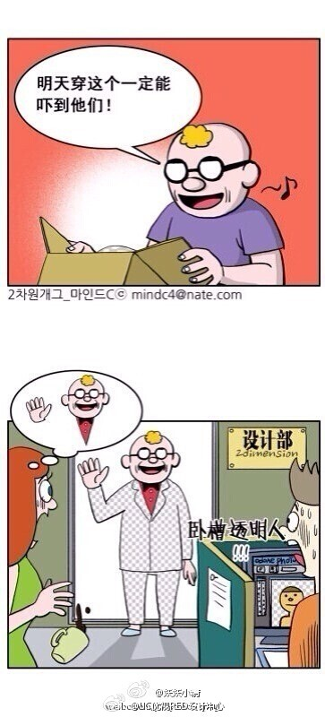

为什么只有设计师才看得懂，难道有深意？ //@_杨肉_:..//@Apache9: 真冷//@马德森9: //@UI中国: //@鹿野阿枭-停滞中: 我靠真的好冷...//@Suntik: 冷到吓哭2333//@野良犬P: //@芙蘭鳳凰:好冷。。。//@Sandwichii-轻羽: 233333//@stosion: ...好冷@UC优视RED设计中心:听说这个笑话只有设计师才看得懂。 @UI中国 @小火 @Dribbble华人帮 @UC光头哥 @UEhtml设计师交流平台 